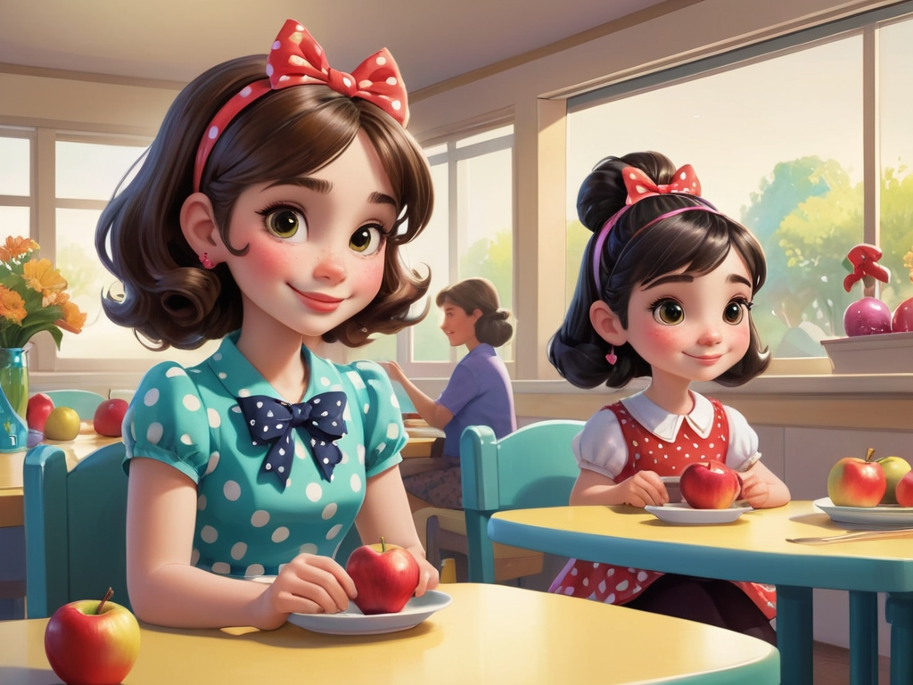
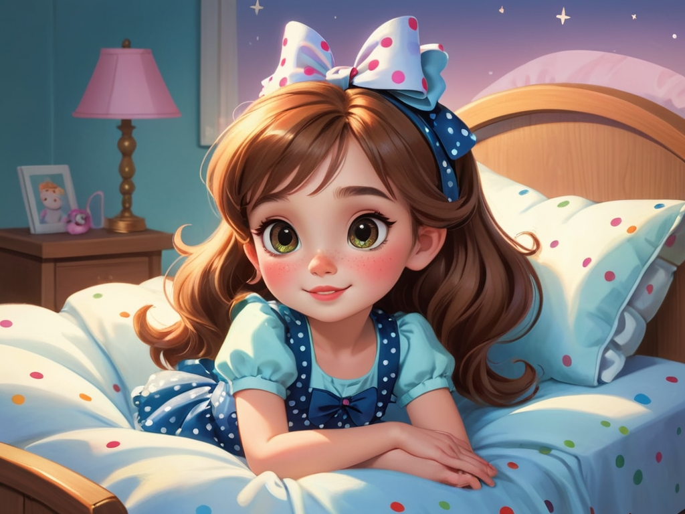

Lily wakes up early and gets ready for a day full of adventures. With her mom's help, she puts on her favorite blue dress and prepares for a healthy breakfast.
Lily’s room is a bit messy, and her mom tells her the importance of keeping things tidy. Lily cleans up her toys, books, and clothes, feeling proud and accomplished.
Lily goes into the garden and finds flowers blooming and butterflies flying. She learns that flowers need sunlight and water to grow, so she helps her mom water the plants.
Lily and her friend, Little Bear, are playing with building blocks, but the tower they built is too high and about to fall. Lily learns that working together helps build stronger towers, and they both work hard to finish the big tower.
Lily meets a little girl at the park, and they both have a beautiful balloon. Lily learns the joy of sharing and gives her balloon to the little girl, receiving a big smile in return.
While playing in the forest, Lily discovers a small bird. The bird seems lonely, so Lily learns to respect animals and helps it find its way home.
Lily sits down with her mom for lunch, and her mom gives her an apple. Lily learns to be grateful and says “thank you” to her mom.
Lily feels a bit scared while climbing a small hill, but she gathers courage and takes it one step at a time. Eventually, she reaches the top and enjoys the beautiful view.
Lily plants a small tree seedling and waits for it to grow. She learns the value of patience and understands that growth takes time.
After a fulfilling day, Lily lies in bed, and her mom tells her a bedtime story. Lily feels happy and content with her day and drifts off into a peaceful sleep.
